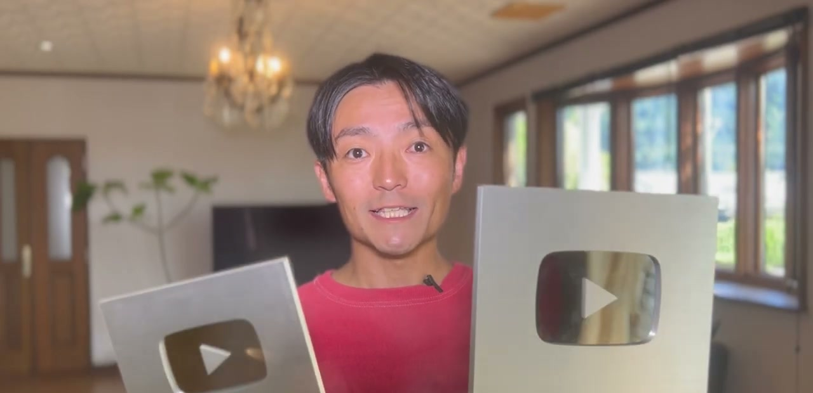
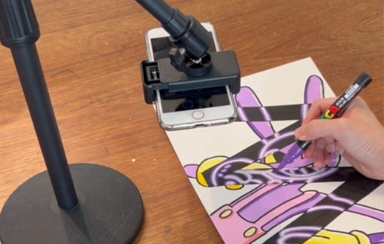
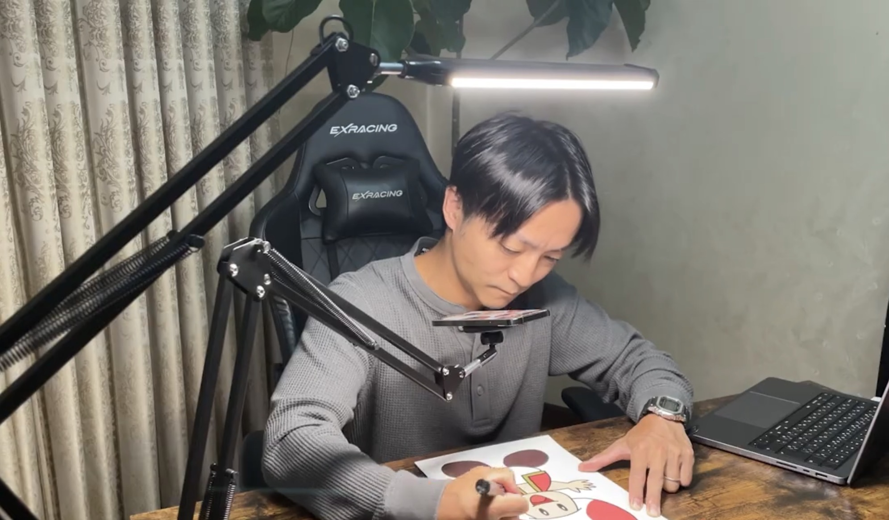
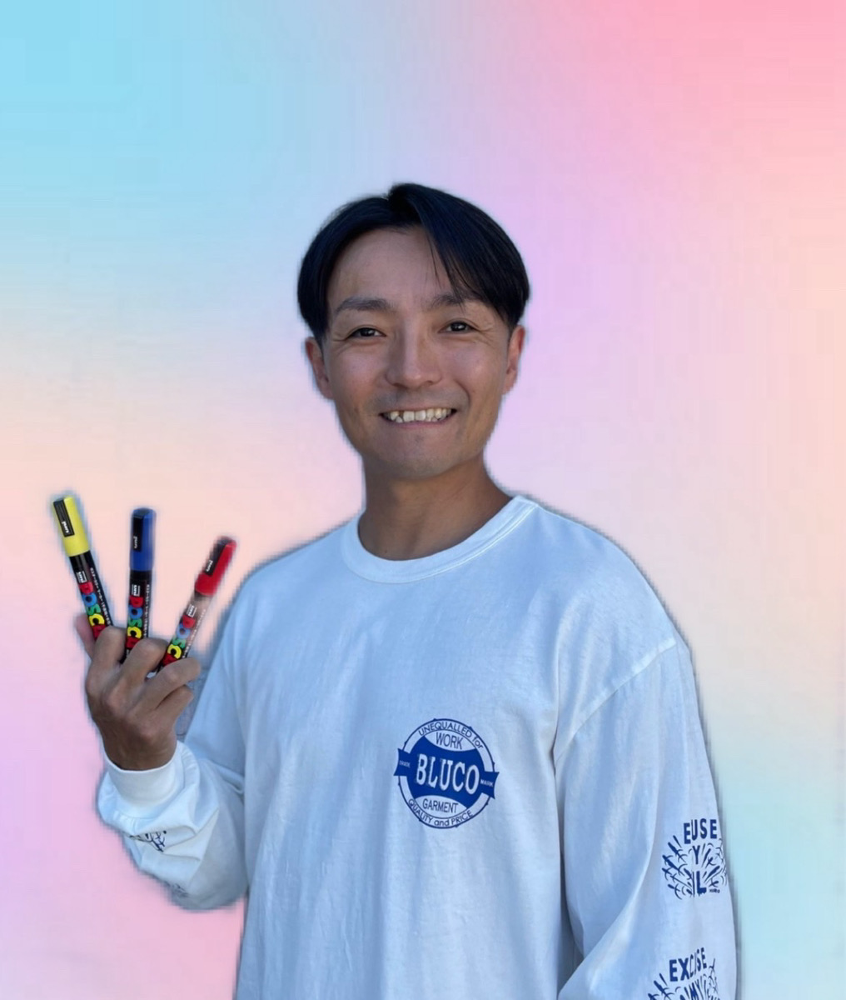

絵を描くことや
物作りが好きなら
絶対にハマる！
 ★
✦
●
★
★
✦
●
★
★
✦
●
★
★
✦
●
★
参加者が一定数に達した場合、無料で参加できる
ポスカアート副業実践講座を終了させて
いただきます。
メディアで話題になる頃には、もう遅い。
日本でまだ知られていない「今」こそ、
先頭を走れる最大のチャンス。

ポスカアートは
絵を描くことや物作りが好きな人であれば
楽しみながら続けることが出来ますし
お客様から感動されたり喜ばれることは
毎度のことなので
やりがいを感じることも出来ます。
また、絵が好きな人は
男女ともに多いので稼ぎやすく、
上記で解説した副業で挫折する3つの理由が
物作りや絵を描くことが好きな人であれば
当てはまらないんです。
だからこそ
「絵を描くことが好きではない・物作りが好き
ではない」人は向いていない副業になります。
下記より LINE 追加して
ポスカアート副業実践講座を
無料で受け取ってください！
未経験でもゼロから理解できるように
販売戦略や具体的な進め方を全てお伝えします！
 ▶
▶
過去の動画編集で挫折していたんですが、
ポスカアートは楽しく続けられて、
旦那の収入を超えられました！
 ▶
▶
過去に投資を勉強するも退屈すぎて継続できず、
挫折してしまいました。
ポスカアートは楽しく続けることが
苦にならなかったので、好きなことを仕事にする
大切さを学びました！
 ▶
▶
職場の人間関係に悩んでいました。
会社を辞めずに辛い仕事を探していたところ、
ポスカアートに出会いました。
ストレスなく続けることが出来ています！
 ▶
▶
過去に色々副業に挑戦しましたが、
旦那から「君に出来るわけがないんだから時間の無駄」と言われていました。
ですがポスカアートで月70万稼げて、
「すごいね！」と言われて、自信がつきました！
 ▶
▶
過去に転売・物販ビジネスをやってたんですが
全く稼げずに挫折…自分はビジネス不向きなんだと
諦めかけてたんですが、
最後の望みでポスカアートに挑戦し、
人に感謝されながら稼ぐことができたので、
本当にやってよかったなと思っています！
 ▶
▶
仕事に拘束される毎日でしたが、
ポスカアートで楽しみながら稼げるようになり、
月収20万円から月収80万円以上に成長。
旅先でも稼げるライフスタイルを手に入れました！
日本でポスカアート副業が学べる場所はここしか
ないので、このページを閉じると2度と手に入らないかも
しれません...
日本ではあまり知られていない
ポスカアートですが、
海外ではすでに大流行していて
世界80億人が視聴者となる可能性を秘めています。

逆に今このタイミングで
このページを見つける事ができて
ポスカアートという働き方を知れてる
ということは、大きなチャンスに出会えてる
と言えます。
ただし、いくらチャンスに出会えても
掴まなければ意味がありません。
是非まずは下記より LINE 追加して
ポスカアートの始め方が学べる
動画講座を無料で受け取ってください！

ポスカアート副業を教えるコミュニティの
運営代表
日本の芸能人やインフルエンサーなどにも
ポスカアートを制作
日本では1番実績のあるポスカアーティスト
個人で月収200万円以上を稼ぎ続け、
ポスカアートというスキルが
日本だけではなく世界で通用すると証明した。

僕の夢は世界に通用する
ポスカアートブランドを作ることで、
その目標に向かって日々突き進んでいます！
そんな中でお仕事できる仲間も大募集してるので
是非下記から LINE を追加して
無料で学べるポスカアート副業実践講座
を受け取ってください！